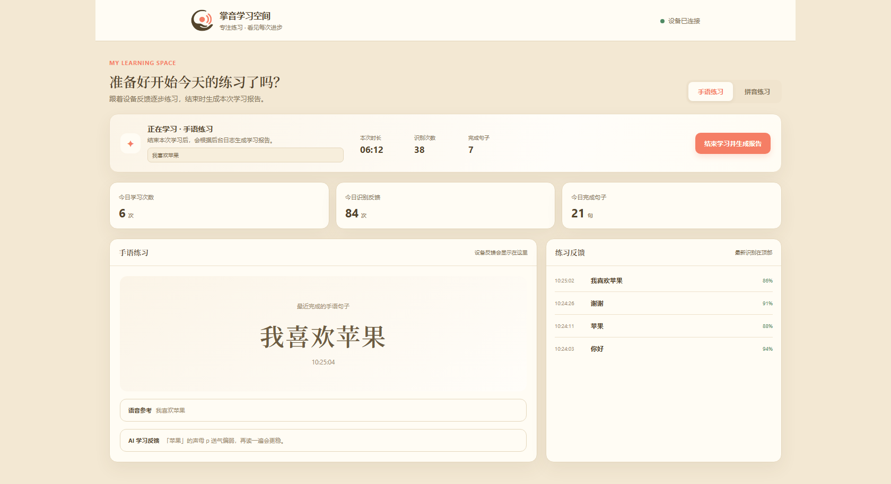
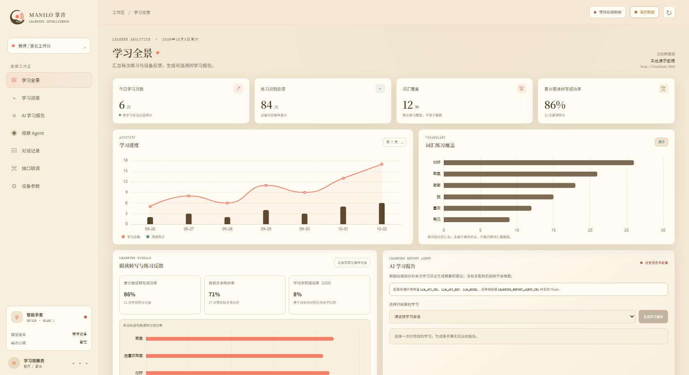
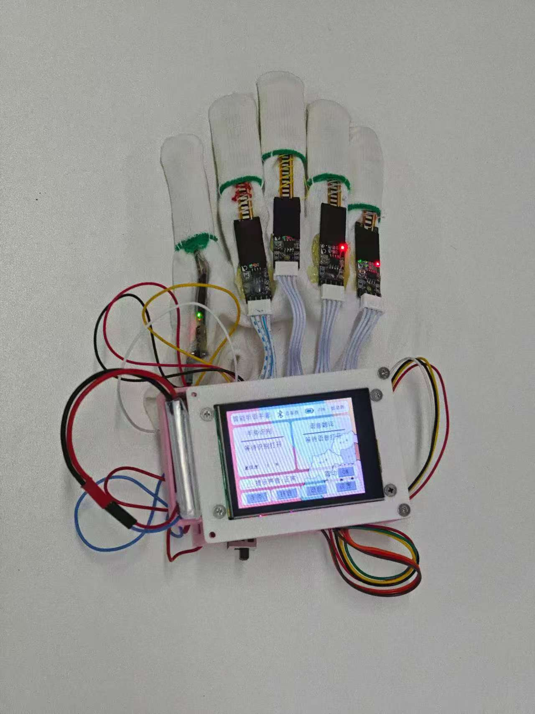
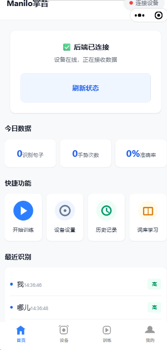

Echo | 未来·回响
Manilo 掌音
让重新听见世界的人，重新开口说话。
一副会“教说话”的可穿戴手套 —— 把人工耳蜗术后的拼音与开口训练，从机构的一小时，变成家里的每一天。
用手掌，说一句你好。
听得见了，话还得练出来
人工耳蜗解决了“听得见”，没解决“说得出”——术后要每天练 1—2 小时、连续 6—12 个月。
| 指标 | 数值 | 口径 |
|---|---|---|
| 中国听障人士 | 2780万 | 占残疾人总数约 1/3；0—6 岁听障儿童 13.7 万 |
| 言语治疗师 | 不足 1万 | 按国际通行标准每万人 2 名，应配备约 28 万名 |
| 机构级康复设备 | 15—17万元/台 | 头豹研究院；基层机构推广困难，家庭不可及 |
手术便宜了，康复跟不上
2024 年 12 月集采落地，人工耳蜗单套从 20 余万降到约 5 万——做手术的人多了，要做康复的人也多了。
| 支付方 | 数值 | 要点 |
|---|---|---|
| 人工耳蜗集采 | 20余万→5万 | 2024-12 落地 |
| 纳入医保 | 28省 | 报销约 65.3% |
| 术后训练补贴 | 1.6万/学年/人 | 康复救助制度 |
一副陪孩子练说话的手套
六轴 IMU
数字麦克风
200×20 时序特征
约 180 ms 出结果
离线语音识别
学习报告 · 观察 Agent
语音播报 · 震动
硬件与部署模块与实测指标
| 模块 | 器件 | 指标 |
|---|---|---|
| 手势采集 | 5 路弯曲传感器 | 五指弯曲 → 5 路 ADC |
| 姿态采集 | JY61 六轴 IMU | 三轴加速度 + 三轴角速度 |
| 手套端主控 | STM32F407ZGT6 | Flash ≈85 KB / RAM ≈42 KB |
| 主控端 | 电脑（运行主控程序） | 承接上浮难例的复杂模型推理与离线语音识别 |
推理算法200 × 20 时序特征
每 10 ms 采一组，攒满 200 组作为 2 秒动作窗口；每组 20 维特征——同时装着“手形”与“运动”，静动态手势共用一个模型，时间差分还能抵消佩戴漂移。
| 分级协同 | 取值 |
|---|---|
| 端侧独立完成识别 | 90%+ |
| 难例上浮阈值 | 0.10 |
练得对不对，用三个数说话
三个指标分开算——机器听懂了，不等于孩子说对了。
| 指标 | 字段 | 回答什么问题 |
|---|---|---|
| 转写成功率 | transcription_ok | 机器听清了没有——只说明产出了文本，不等于说对 |
| 目标文本吻合率 | matches_expected | 说的是不是目标句（忽略空白与标点后比较） |
| 字符错误率 CER | character_error_rate | 具体错了多少、错在哪里（逐字编辑距离） |
A · 练完之后一份不撒谎的报告
自动汇总时长、识别次数、覆盖标签、跟读成功率与 CER。日志里没有的指标就写没有。
B · 练习之中会陪练的观察 Agent
每 30 秒扫一次日志，给一句 60 字以内、可执行的建议；模型不可用就退回本地规则。
机构先买，家庭后跟
先做机构、再做家庭——康复师认可之后推荐，是康复行业里最短的一条路。
| 客户 | 场景 | 支付来源 |
|---|---|---|
| B 端 · 机构 | 康复中心 / 特教学校 / 医院康复科 | 机构预算 · 康复训练补贴 |
| C 端 · 家庭 | 术后康复家庭的居家训练 | 家庭自付 · 补贴返还 |
| G 端 · 主管 | 残联救助 · 教育装备采购 | 财政专项 |
收入结构四段收入互相喂养
硬件（入口）→ 内容订阅（毛利）→ 机构 SaaS（持续）→ 数据与科研（长期）。样本越多，模型越准。
每学年 / 人多地康复补助
每人 / 年家庭版手套
建议定价
| 产品线 | 建议定价 |
|---|---|
| 家庭版手套 | 整机 + 家长端看板 · ¥2,980—3,980 |
| 机构版 | 每间教室含教师看板与培训 · ¥19,800 起 |
| 内容订阅 | 字母拼音 → 词句对话 · ¥99—199 / 月 |
| 机构 SaaS | 看板 + 报告 + 数据导出 · ¥6,800—12,800 / 年 |
先拿证据，再进目录，最后放量
先拿到效果证据，再进入采购目录，最后靠机构推荐带动家庭放量。
| 阶段 | 做什么 | 验证指标 |
|---|---|---|
| 0—6 个月 ① 验证 |
与 1—2 家康复中心 / 特教学校共建训练流程，做 20—50 例真实用户的纵向跟踪 | 前测 / 后测 字符错误率（CER）有可观测变化 |
| 6—18 个月 ② 进目录 |
以机构版 + 教师看板进入康复机构与特教学校，申报残联康复辅具目录与教育装备采购目录 | 完成申报并进入评审；试点机构每周活跃训练会话数 |
| 18 个月起 ③ 放量 |
家庭版随机构推荐进入家庭；内容扩展到词、句、对话 | 家庭版季度出货量；跟读样本累计量 |
不做重复的，做没人做的
| 竞争类型 | 他们 | 我们 |
|---|---|---|
| 康复 App | 只有“听声音”和“点图片”，动作本身没有测量 | 物理动作输入 + 跟读评分的客观数据链：识别 → 目标句 → 三指标 → 报告 |
| 机构级设备 | 均价 15—17 万元/台，进不了家庭 | 价格压到家庭可负担，同时保留机构级看板 |
| 助听器 / 耳蜗厂商 | 解决“听得见”——那是他们的战场 | 我们解决“说得出”，是配套而不是竞争 |
这就是它跑起来的样子
硬件、学生端、教师端、小程序——四个都在跑，都是现在这一版。




这些，都已经做完
上一页是它现在的样子，这一页是它现在的水准——都是既有实测口径，学习效果类数据待试点采集。
| 部分 | 已完成 |
|---|---|
| 硬件整机 | 手套端集成 5 路弯曲传感器、六轴 IMU、数字麦克风、串口屏、TTS 与震动马达；主控端与手套端完成数据互传 |
| 端侧算法 | 20 维特征提取与轻量手势模型（STM32Cube.AI 部署）；9 维声音事件模型（4 类）；端侧独立完成 90%+ 识别 |
| 边缘服务 | 离线语音识别约 200 ms · TTS 语音合成 · TCN 增强模型跑在 NPU 上（ONNX Runtime） |
| 双模式识别 | 手势直译词库 + 拼音拼写 30 个标签（A—Z 与 CH / SH / ZH / NG），两条链路都已跑通 |
| 学习平台 | 学习会话 · 三指标跟读评分 · AI 学习报告 · 练习观察 Agent · 教师 / 家长看板 · 设备阈值在线调节 |
接下来，往词和句走
现在稳定做到的是字母与拼音这一层。再往上，是词、是句。
| 评分维度 | 未来 |
|---|---|
| 声母 / 韵母 | 逐音素定位“哪一个音发错了” |
| 声调走向 | 声调曲线与目标对比 → 下一页展开 |
| 语速 · 停顿 | 偏差、稳定性与是否逐字崩解 |
为什么能做到缺的不是系统，是数据
过程数据、边缘算力、数据闭环都已具备——缺的是更多标注数据与更强的边缘模型。
中文四声，卡在一条音高曲线上
字符级的 CER 看不见声调。耳蜗削弱了低频的时间精细结构，而中文声调恰恰靠它携带——这是术后最难、也最容易被忽略的一环，也是我们现在正在攻的难关。
log-Mel + CQT 对数频率
半音刻度做说话人归一化
轮廓流：1D 卷积 + BiGRU
走向 · 半音偏差 · 拐点
int8 量化 · <30 ms / 音节
| 声调 | 调值 | 曲线 | 最常见的错 |
|---|---|---|---|
| 一声 | 55 | 高平 | 起调偏低，听感接近轻声 |
| 二声 | 35 | 中升 | 升幅不够，或起点起得太高 |
| 三声 | 214 | 降升 | 拐点太晚，后半段没升起来 |
| 四声 | 51 | 全降 | 收得太早，降幅不足 |
攻坚进度我们攻到哪儿了
我们是谁
能装传感器的人、能把模型压进 MCU 的人、能把数据变成家长看得懂的东西的人、懂康复训练怎么练的人——四者缺一，产品都只是零件。
| 角色 | 姓名 | 分工 |
|---|---|---|
| 队长 · 统筹 | 牟菁婧 | 项目定义、路演表达、对外沟通 |
| 嵌入式与硬件 | 牟婧菁 | F407 端采集、模型部署、蓝牙通信、电路与结构 |
| 边缘 AI 与算法 | 邓世昊 | 200×20 特征与训练、NPU 部署、语音链路 |
| 平台与数据 | 施逸尔 | Web 服务、学习看板、报告与观察 Agent |
名字的来处Manilo 掌音
mani 是「手」，lo 是「你好」——用手掌发出的声音，向世界说一句你好。
我们相信康复的终点不是一组正确的音节，而是有一天他愿意主动开口，先对身边的人问一声好。
我们要做的，是让他重新说出自己的名字。